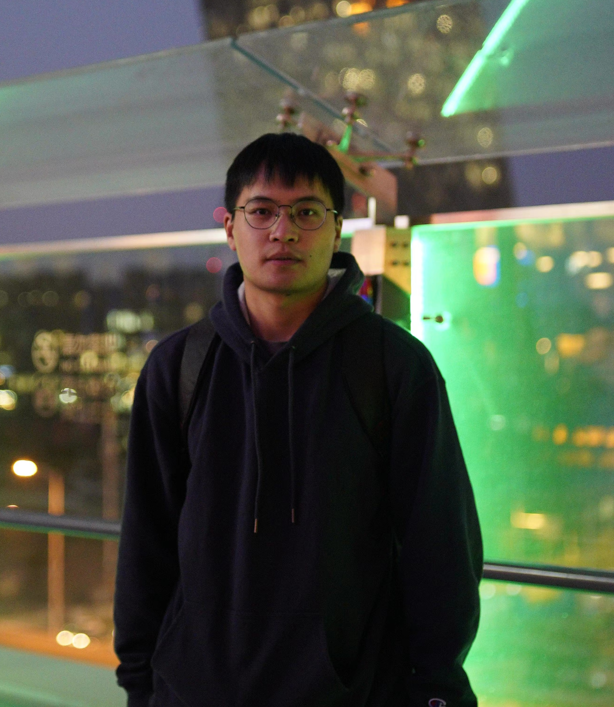
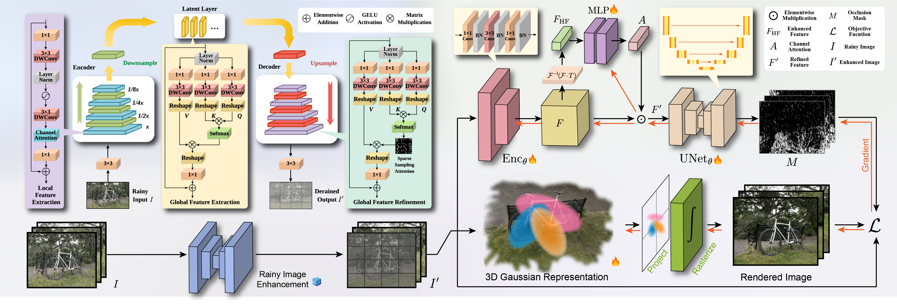
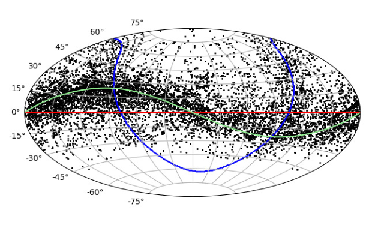
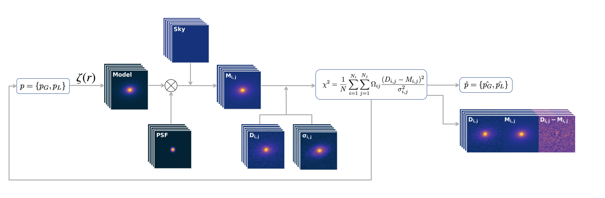
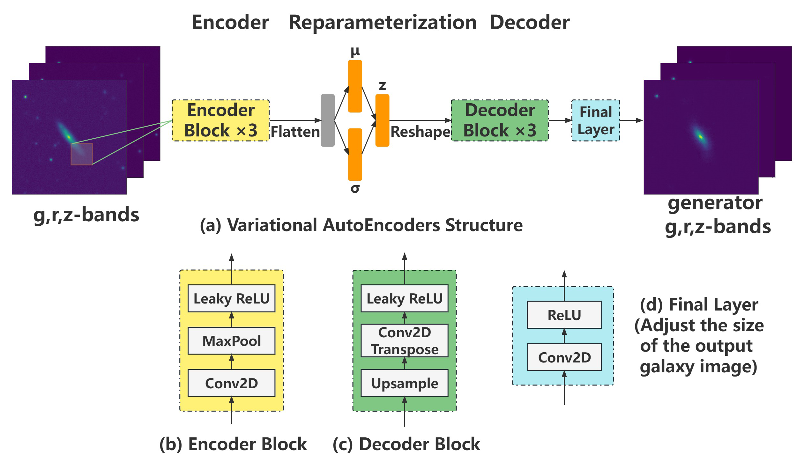
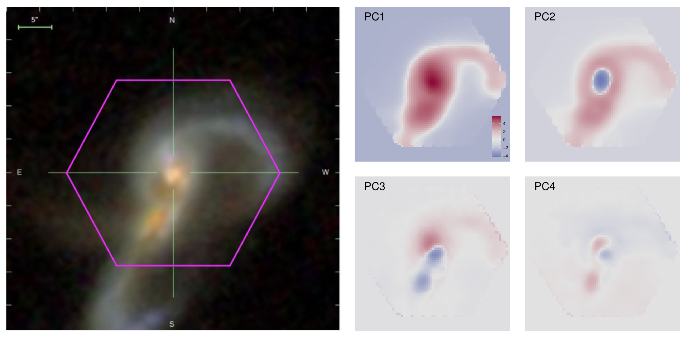
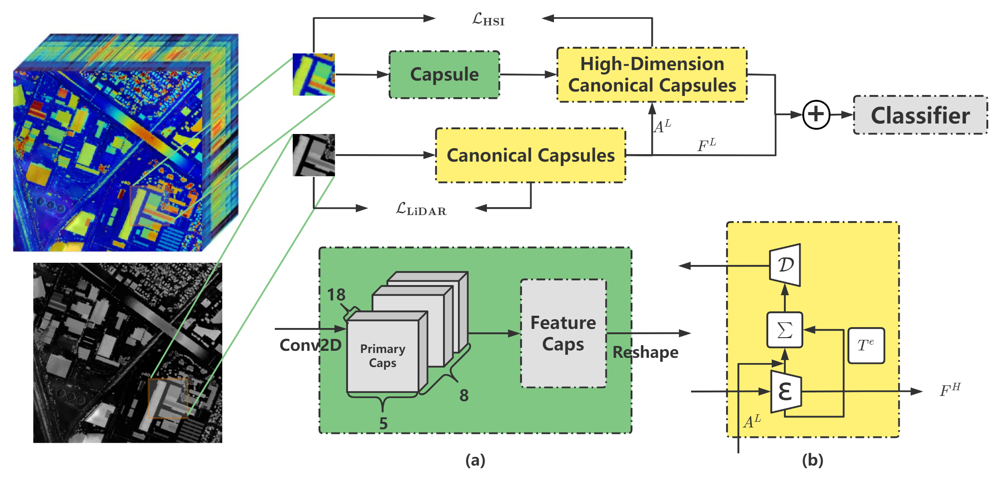

|  |
Quanfeng Xu (徐 权峰) |
I am currently a 2rd-year Ph.D. candidate at Galaxy Cluster Group, Shanghai Astronomical Observatory, supervised by Prof. Shiyin Shen. I received my M.S. degree from College of Probability theory and mathematical statistics, Yunnan Minzu University, in 2023. Before that, I received my Bachelor degree from the College of Mathematics and applied mathematics, Zhejiang International Studies University, in 2020. My research interests include galaxy morphology and computer vision.
|  |
DeRainGS: Gaussian Splatting for Enhanced Scene Reconstruction in Rainy Environments |
|  |
Digitization of Astronomical Photographic Plate of China and Astrometric Measurement of Single-exposure Plates |
|  |
Galmoss: A package for GPU-accelerated galaxy profile fitting |
|  |
From images to features: unbiased morphology classification via variational auto-encoders and domain adaptation |
|  |
qrpca: A package for fast principal component analysis with GPU acceleration |
|  |
Unsupervised multi-branch Capsule for Hyperspectral and LiDAR classification |
Awards: